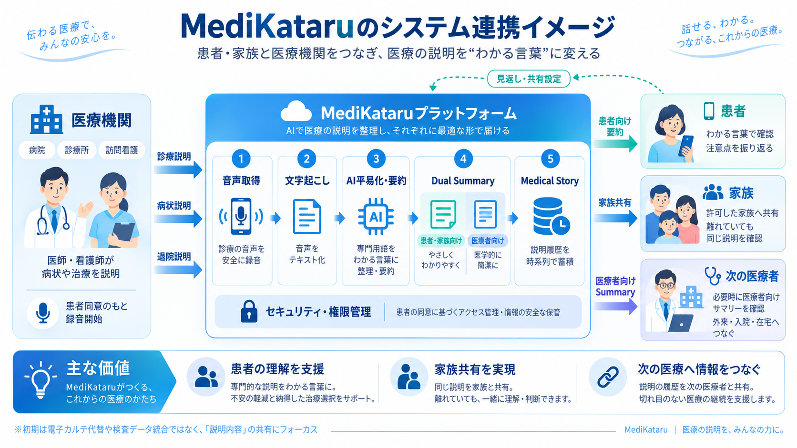

40〜80%
医療者から伝えられた情報のうち、直後に忘れられると報告されている割合。高齢・不安を抱える患者ほど不正確・不十分になりがち。
出典：Kessels RPC. J R Soc Med. 2003;96(5):219–222
AI × 医療コミュニケーション
医師や看護師の説明をAIが聞き取り、患者さん本人やご家族にわかる平易な言葉へ翻訳・要約。
「聞いて終わり」にせず、振り返り・家族との共有・次の医療者への引き継ぎまでつなぎます。
01 — Problem
そして、それはこれからも続き、むしろ大きくなっていく問題です。
40〜80%
医療者から伝えられた情報のうち、直後に忘れられると報告されている割合。高齢・不安を抱える患者ほど不正確・不十分になりがち。
出典：Kessels RPC. J R Soc Med. 2003;96(5):219–222
約18%
2025年、75歳以上が全人口に占める割合の見込み。
出典：厚生労働省「我が国の人口について」
約35%
2040年、65歳以上が全人口に占める割合の見込み。説明を受ける側の理解負荷はさらに高まる。
出典：厚生労働省「我が国の人口について」
日本でも、ヘルスリテラシー（健康情報を理解・活用する力）が低い人ほど医師の説明の理解が低いことが示唆されています。（Health Lit Res Pract. 2024;8(3):e175–e183）
説明を聞いても難しくて理解できず、後で内容を思い出せない
wants会話を平易に要約してほしい
同席できず、本人から聞いても要点がわからない
wants許可されたメンバーへ共有してほしい
何度も同じ説明が必要。何度聞いても正しい情報が得られない
wants患者向け・医療者向けサマリーを切り替えたい
理解不足が検査・処置・治療に影響する可能性がある
wants「わかったつもり」を減らしたい
Evidence
AHRQ（米国医療研究・品質調査機構）は、患者の理解を確認する方法としてTeach-back（患者自身の言葉で説明し直してもらう手法）を推奨。理解・服薬遵守・満足度の改善につながるとされています。
Use the Teach-Back Method: Tool 5 | AHRQ ↗だから必要なのは
医療者の言葉を
“生活者の言葉”に変える仕組み。
MediKataruは、この発想をAIで補助します。
02 — Solution
MediKataruは、医療者の言葉を患者・家族の理解に変えます。
医師・看護師などが、患者さんに病状や治療を説明。患者同意のもとで録音を開始します。
音声をテキスト化し、専門用語を平易化。重要な内容を整理します。
わかる言葉で振り返り、許可したメンバーと共有。
ボタンひとつで医学的なサマリーに切り替え。

03 — Demo
診察室での医師の説明が、どう変わるのか。モードを切り替えて体験してください。
「EFが低下しており、volume overloadがあります。利尿薬を調整しましょう。呼吸苦や体重増加があれば早めに受診してください。」
※表示内容は資料記載のサンプルに基づくイメージです。実際の出力とは異なる場合があります。
04 — Value
医師・看護師の話をAIが平易な言葉に翻訳・要約。病状や治療方針を後から確認できます。
患者さんが許可したメンバーへ説明内容を共有。同席できないご家族も、病状や今後の予定を把握しやすくなります。
医療者用ボタンで医学的なサマリーに切り替え。次回診察や入退院時の情報共有に活用できます。
05 — Vision Story
78歳の男性。妻と二人暮らし。心不全で近所の病院に通院中。長女は東京で暮らしている。
医師から「心臓の機能が少し落ちています。薬を調整しましょう」と説明を受ける。本人はその場ではうなずいていた。
しかし家に帰ると、「結局、何が悪かったんだっけ」と妻に話す。そこでMediKataruを開く。
本人は内容を妻と一緒に確認。共有を許可している長女にも同じ内容が届き、東京にいながら父親の病状と今後の注意点を理解できる。
患者・家族向け
「心臓の力が少し弱くなっています。体に水がたまりやすくならないよう、薬を調整します。息苦しさや急な体重増加があれば早めに受診してください」
数か月後、心不全が悪化し救急搬送される。救急外来で家族は「これまでの経過をうまく説明できない」という状況に。
そこでMediKataruの「医療者向け」ボタンを押す。これまで医師や看護師から受けた説明履歴が、医療者が短時間で把握できる形にまとまる。
入院後も、医師や看護師から受けた説明はMediKataruに残っていく。
医療者向けサマリー
「心不全で外来通院中。利尿薬調整歴あり。最近の説明では体重増加・呼吸苦出現時の早期受診を指示」
退院の日。本人のMediKataruには、「今回なぜ入院したのか」「どんな治療を受けたのか」「退院後に何に注意すればよいのか」がわかる言葉で整理される。長女も同じ内容を確認できる。
退院後、訪問看護師が自宅を訪れたときには、患者の許可のもと医療者向けサマリーを確認する。
病院、診療所、訪問看護、家族。それぞれが別々の場所にいても、患者を中心に「説明されたこと」がつながっている。
つながるケア
MediKataruが目指すのは、医療データを集めることではない。
医療者が伝えた言葉を、患者が理解できる言葉として残し、
家族と共有し、必要なときには次の医療者へつなぐこと。
06 — Difference
01
医学的意味を保ったまま、非医療者の言葉へ翻訳
EFが低下しておりvolume overloadがあります
心臓の力が弱くなり、体に余分な水分がたまっている状態です
単に短く要約するのではなく、「翻訳」を製品の中心に据えます。
02
同じ説明から、ふたつのサマリーをワンタップで
03
「説明された内容」を時系列で蓄積し、AIが再要約
1回の診察で終わらせず、数か月・数年単位の経過を再要約します。
一般的な競合
今日の診察を
忘れないAI
診察を「記録・要約」する
MediKataru
これまでの医療を理解し、
次の医療へ伝えるAI
医療者の言葉を患者の理解に変え、その理解を家族と次の医療へつなぐ
07 — Roadmap
外来・入院・在宅で受けた説明を時系列で整理し、過去の経過を患者・家族が振り返れるようにします。
複数回の説明履歴から、入退院・救急受診時に必要な経過を自動でまとめ、患者の許可のもと医療者と共有します。
在宅医療、訪問看護、介護、薬局などへ利用を広げ、患者中心に説明内容が引き継がれる仕組みを目指します。
初期のフォーカスについて 初期は、採血データ・画像データの統合保存や、電子カルテを代替するPHR（Personal Health Record：個人の健康記録）基盤の構築は対象外です。医療者の「説明内容」の共有に集中します。
事業理念
医療者と患者・家族の間にある「言葉の壁」をなくし、誰もが自分や大切な人の病状・治療を理解し、納得して医療に向き合えるようにする。
事業ビジョン
医療者から受けた説明を、患者がいつでも振り返り、許可した家族と共有できる。必要なときには医療者向けの情報へ切り替え、診察・入院・在宅など、医療の場が変わっても説明の内容が引き継がれる未来を目指す。
Contact
医療機関・訪問看護ステーション・介護事業者・研究機関の皆さまからの、実証導入やパートナーシップのご相談をお待ちしています。